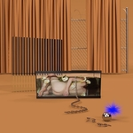
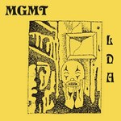
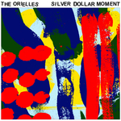
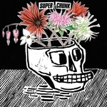

Quick Takes (February 2018)
Welcome to this year's second edition of Quick Takes. It has been a very busy month for Carl & I, so we do apologize for publishing this a tad after the usual timeframe.
It wasn't the most remarkable of months, but we still found plenty of music that graced our ears. I was quite surprised with MGMT's latest psychedelic concoction, a band whose albums I've struggled to fully enjoy even if I do like many of their singles. As for Carl, his choices were more even-handed, though I do agree that Ought's Room Inside the World loses some of the allure of their previous two records.
What were your favorite albums during the month of February? Anything we didn't get to review on our site that we should've? You can always reach us on facebook, or on our official twitter page. - Juan
...
 Anna Burch
Anna Burch
Quit the Curse
(Polyvinyl)
Anna Burch needed a songwriting change on Quit the Curse. Having worked under a number of folk rock-driven projects, the Michigan singer-songwriter steps into the solo realm with a breezy debut effort which draws from her broad influences and personal experiences. Burch’s parched, low register is a malleable weapon that adapts to her surf guitar accents, as she yearns for validation over loungy, lackadaisical strums (2 Cool 2 Care), starry country arrangements (Belle Isle) and gnaw-toothed chord changes (Asking 4 a Friend) with a confident stride. Her versatility as a guitarist does put her a step above some of her anti-folk contemporaries, given how she never lets her songs wander as she goes from one lackluster romantic entanglement to the next. Quit the Curse is consistently hooky and elegant, and though it slumps with a few lax, jangly rhythms, it’s nothing less than a pleasant stay to her sighing thoughts and apprehensions. [7/10] Juan Edgardo Rodríguez
FRIGS
Human Behaviour
(Arts & Crafts)
FRIGS want to make post-punk sound dangerous again on Basic Behaviour. And to their credit, the Toronto four-piece are quite adept at creating an inhospitable atmosphere that oozes with malicious intent. Hey, even the humorless faces they paste on their press release photograph must mean they don't want to make friends. Fronted by Bria Salmena's gnarled sing-speak, FRIGS half-convincingly communicate their agitation over piercing shards of noise. The band are at their best when the rhythm section takes charge - Gemini, for instance, lets out a ferocious drum pattern over Salmena's disconcerting narrative. On Waste, an opaque slow-burner, she lures us into a place where human scum is rightfully purged. Unfortunately, tracks like Doghead and Taking Pictures sound like a debased cross-breed between fellow contemporaries Savages and Preoccupations. FRIGS have found the right platform to proclaim their nihilistic views; it's a promising debut that suggests they'll refine it further over time. [5/10] Juan Edgardo Rodríguez
 Kyle Craft
Kyle Craft
Full Circle Nightmare
(Sub Pop)
Kyle Craft’s second LP is grounded by confident arrangements and a Rolling Stones-esque glamour that oozes blues-rock classicism. That being said, the honky-tonk sound is unashamedly poppy, sounding immediately familiar and not bothering to let a listener regroup between the blasts of fanfare. The effect, however, is a completely oversaturated panoply of parading guitars, pianos and drums that borders very close on the insufferable. The influence of The Decemberists’ Chris Funk - who was drafted in to produce Full Circle Nightmare - polishes the more refrained sound that lurked in the shadows of debut Dolls of Highland and leaves it gleaming to the extreme. Craft is an artist who values songcraft intensely, structuring his stanzas carefully but with an exuberant self-assuredness. The result of his work in the case of Full Circle Nightmare is a precession of songs that wear out their welcome in a brisk fashion. [4/10] Carl Purvis
 The Lovely Eggs
The Lovely Eggs
This is Eggland
(self-released)
The fifth LP from husband and wife duo The Lovely Eggs stockpiles mound after mound of undercooked red meat, giving the sonic appearance of a band several times their size. Holly Ross’s buzz-sawing, pile-driving guitar takes the form of a bullying wasp from the outset, buzzing around the easily-led drums of David Blackwell. The song structures are haphazard, stopping and starting, but This Is Eggland evolves to become an easier listen than a first impression would surmise. It took the duo until their fifth LP to invite a producer David Fridmann (Mercury Rev, The Flaming Lips, Mogwai) into the mix. The result is not a loss of the uncompromising minimalism or dry wit, but a more dense brand of the edgy, psychedelic punk only noticeable in its absence from the duo’s previous work as The Lovely Eggs when listened to alongside This Is Eggland. [7/10] Carl Purvis
MGMT
Little Dark Age
(Columbia)
MGMT just never give up. Ever since their surprisingly triumphant debut effort, Oracular Spectacular, the Brooklyn duo have been on a restless search to find their own identity. But what hasn't changed in their decade together is their affinity for experimental psychedelic pop, just ever so tweaked to arrive at that middle ground between anthemic euphoria and brainy progressive rock. The reality is that MGMT are really more of a modern-day Electric Light Orchestra, given how their use of drifting synths is the one constant that follows their every thematic sensibility. But something about Little Dark Age feels different, even revelatory. It's as if the duo have finally managed to simplify their song structures with a sophistication that better aligns with their creative pursuits. This time, they're operating under an eighties pop template, as tracks like When You Die and James juggle gleaming synth effects with sharp, introspective awareness. And yet it sounds of its time, a very hard task to achieve considering they could've fallen into effortless pastiche. MGMT always excel when they don't try too hard, and on Little Dark Age, they admirably leverage irony with lighthearted merriment. [8/10] Juan Edgardo Rodríguez
The Orielles
Silver Dollar Moment
(Heavenly Recordings)
West Yorkshire trio The Orielles were born from a house party, where sisters Sidonie and Esme Hand-Halford met Henry Wade at the 40th birthday bash of a parent’s friend. So less sex, drugs, rock ‘n’ roll, more cheeseboards, wine and a few too many shandies for a suppressed neighbor, you’d imagine. That being said, their debut LP, Silver Dollar Moment, is a consistently charming affair, veering on the right side of both nostalgic requiescence and syrupy saccharine sweet. With only drummer Sid old enough to have graduated university, the alluring substance of the record belies the band’s youthful make-up, carving a path of woozy indie-pop that takes in sun-warped psychedelica, scuzzy shoegaze and shambling rhythms. Silver Dollar Moment is a strong debut, striking all the right equilibriums in a blueprint that can so easily sound tired, or simply like every other band that has tried to produce precisely what The Orielles have managed with this record. [7/10] Carl Purvis
Ought
Room Inside the World
(Merge)
Montreal quartet Ought have defined their squelchy brand of post-punk by ensuring their soundscapes are precariously taut, with Tim Darcy’s poetic background sprawling around compact grooves and his own oceanic introspections. With their third LP, Ought have slackened the suspensions, releasing a lot of the tension from their sound. The results are mixed. The straightening out of the sound leaves a much more accessible palette to work from, and it allows Darcy’s musings to unspool with the spotlight focused more heavily on them. The album is strong but is a marked change in direction, nonetheless. That isn’t to say there are more forgettable moments that memorable ones throughout the record, and Darcy is still able to conjure his own kind of sublime moments. The albums keystone is Desire, a sprawling, lighthouse of a track that climaxes with a 70-piece choir ruminating over its shimmering motif. [7/10] Carl Purvis
Rhye
Blood
(Loma Vista)
Mike Milosh has come out of hiding on Blood. Well, to some extent. The LA-based producer, who goes by the nom-de-plume Rhye, has been quiet for the past five years since his breakthrough debut, Woman, which remains one of the most respected soul-pop releases in this post-The XX age. Since then, Milosh hasn't changed his sound too much despite going through some significant life changes, given how the tempos are still as smooth as silk and the suave, mellow groove just as hypnotic. He did enlist a full range of musicians for Blood and the increase in production values shows - tracks like Taste and Stay Safe, not to mention the stunning Waste, are just too sumptuous to have come out of a bedroom recording. But it also formalizes some of the sensual spontaneity of Woman, as he puts forth a lavish, spotless output that also suffers from some seriously tasteless lyrical choices. On Blood, Rhye's fixation with style does get the best of him. [6/10] Juan Edgardo Rodríguez
Superchunk
What a Time to Be Alive
(Merge)
Superchunk have a lot to be pissed off about in What a Time to Be Alive. A political album that's driven by circumstance and not by choice, the veteran pop-punk four-piece barrel through a smartly-targeted set of songs with their typically anthemic thrust. Nevertheless, the message Superchunk put forth usually trumps their punk-flecked guitar flourishes, especially since they choose to rile against their generational brethren with an album that's unvarying in tone or emphasis. It's clear that they don't think fondly of their peers, as the biting Reagan Youth attests, in which they hold themselves responsible for today's backward-looking politics by acknowledging their lack of collective activism. On Bad Choices, they understand that every inaction has a consequence. They channel their vitriol with a celebratory stance, of course, as they openly hammer through their non-agenda as if they were reliving their early nineties output. And that's commendable. Superchunk do come back full circle with a timeless, uniform body of work, though it also takes them back a few years after their late-career breakthroughs Majesty Shredding and I Hate Music. [7/10] Juan Edgardo Rodríguez
25 March, 2018 - 20:27 — No Ripcord Staff